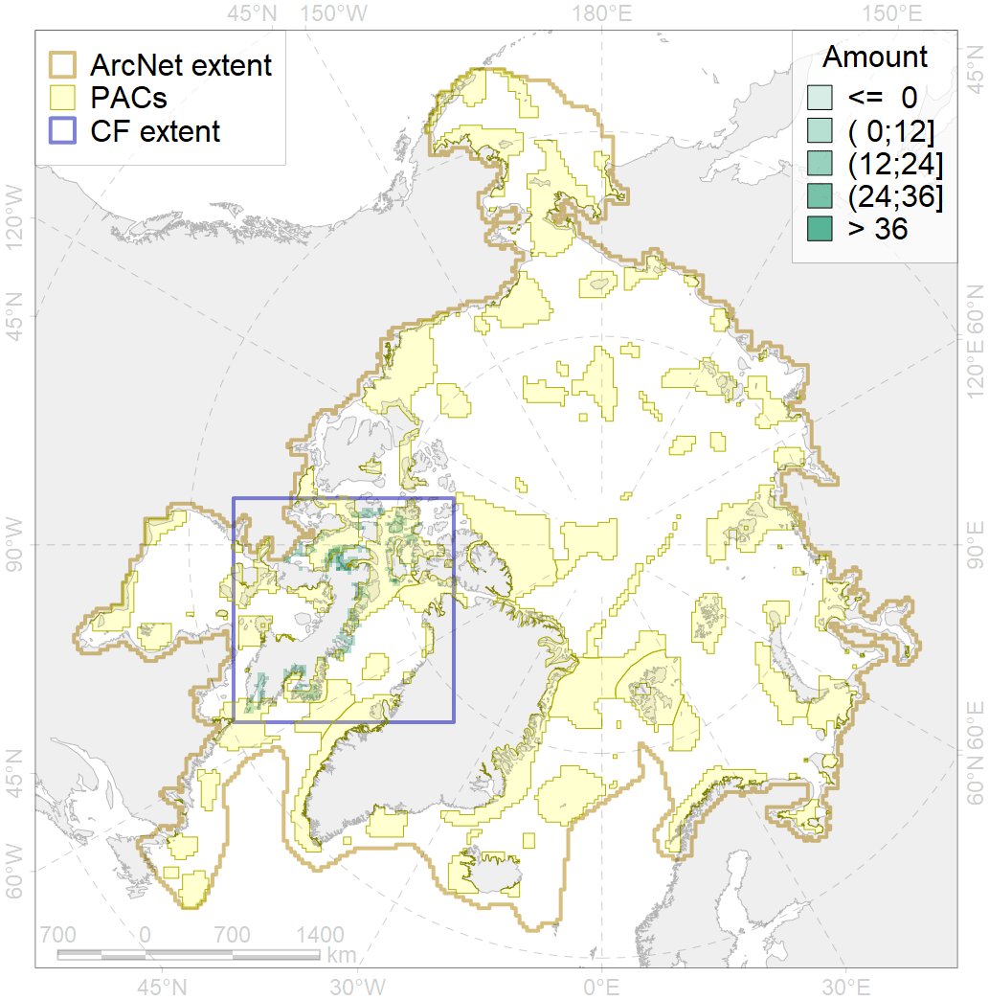
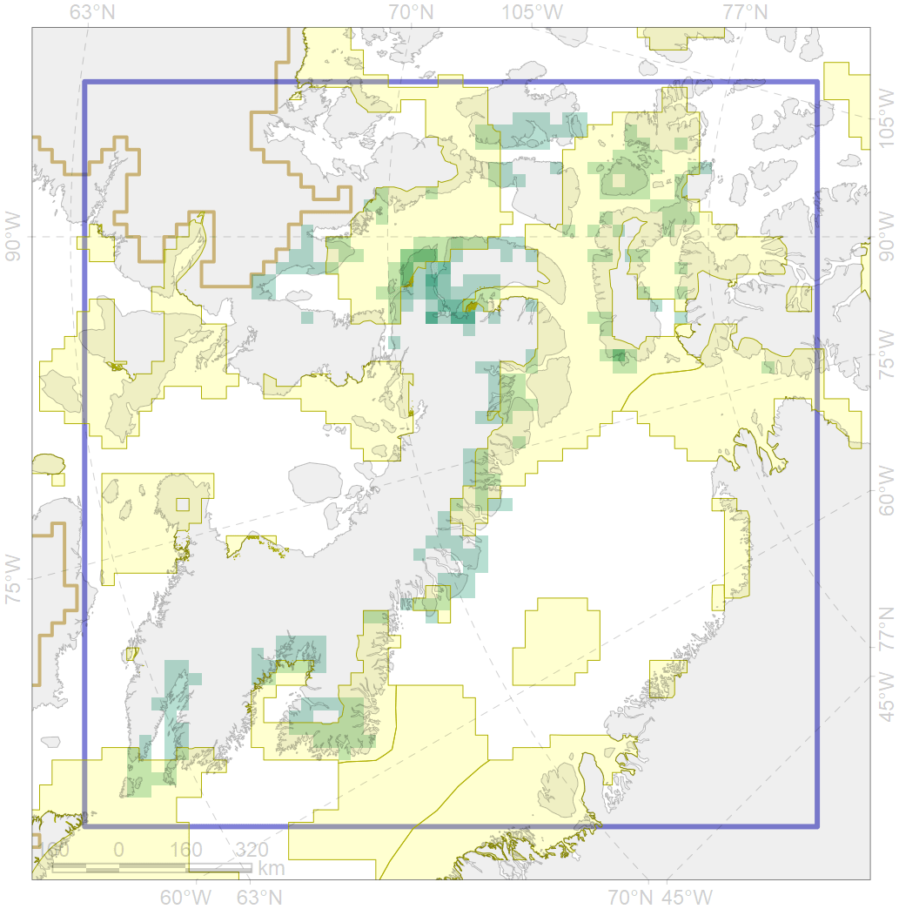

8036

| CF ID | 8036 |
| CF Name | Salt marshes of the Baffin Bay LME |
| Time Period | 2014-2018 |
| Source(s) | Map prepared by F. Romanenko for PAMPAN specifically |
| Seasonality | June-September |
| Depth Horizon | 0 |
| Methodology | remote sensing, field data |
| Author Name | F. Romanenko |
| Notes | |
| Conservation Target Set in the Scenario | 0.3 |
| Conservation Target Achieved in the Scenario | 0.459 (Scenario: 153.0%) |
| PAC ID | Proportion in the PAC | Contribution to ArcNet Target Achievement | PAC’s Contribution to the Achieved Target |
|---|---|---|---|
| 46 | 0.6% | 1.9% | 1.2% |
| 50 | 0.4% | 1.4% | 0.9% |
| 51 | 0.0% | 0.0% | 0.0% |
| 52 | 14.8% | 49.2% | 32.2% |
| 65 | 31.4% | 93.9% | 61.3% |
| 76 | 0.3% | 0.9% | 0.6% |
| inner | 47.6% | 147.4% | 96.3% |
| outer | 52.4% | 5.7% | 3.7% |